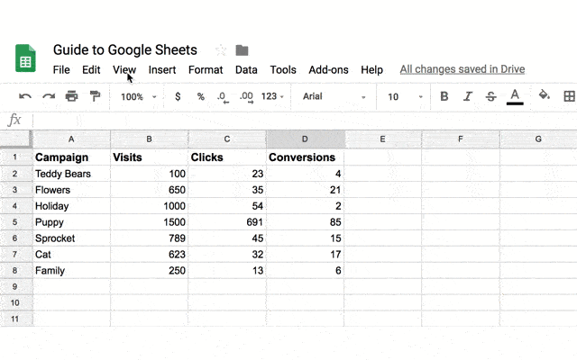
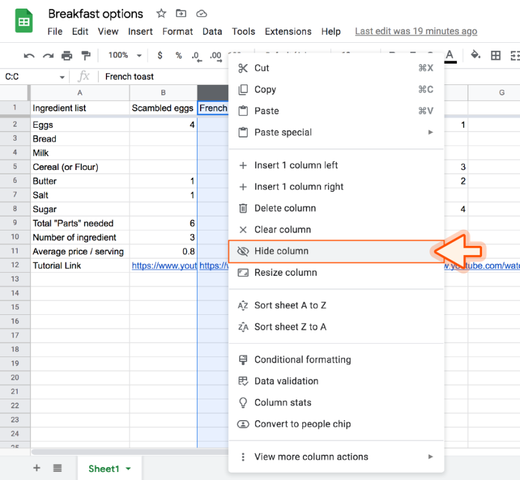
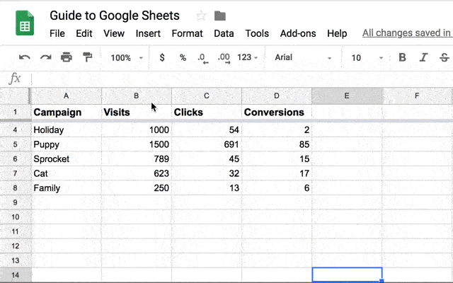

Kamu mungkin sering mendengar penggunaan istilah ‘manipulasi data’ untuk sesuatu yang berkonotasi negatif. Namun ternyata, istilah tersebut bukanlah sesuatu yang secara intrinsik buruk, melainkan bergantung kepada konteks dan penggunaannya.
Dalam data science, manipulasi data merupakan tahapan yang penting dalam proses pengolahan data. Manipulasi data adalah proses penyusunan dan pengelolaan data sedemikian rupa, sehingga data menjadi lebih mudah dianalisis dan diinterpretasi.
Fitur freeze memungkinkan kamu tetap melihat baris/kolom penting saat men-scroll data. Untuk mem-freeze: klik View > Freeze > 1 row.
Untuk menyembunyikan kolom, klik kolom yang ingin disembunyikan lalu pilih Hide Column.
Jika ingin menampilkan data berdasarkan kriteria tertentu: klik Data > Create a Filter, lalu klik ikon corong (filter) di kolom yang ingin difilter.
Berikut ini adalah video tutorial Praktikum Manipulasi Data Menggunakan Google Sheets :